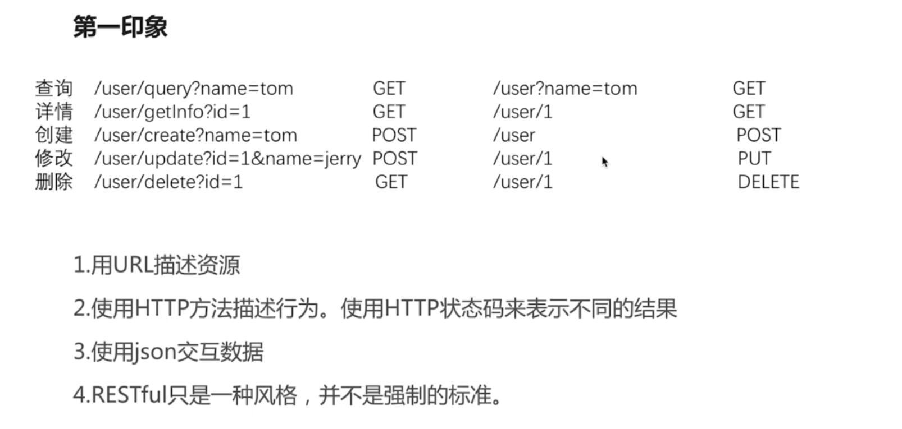
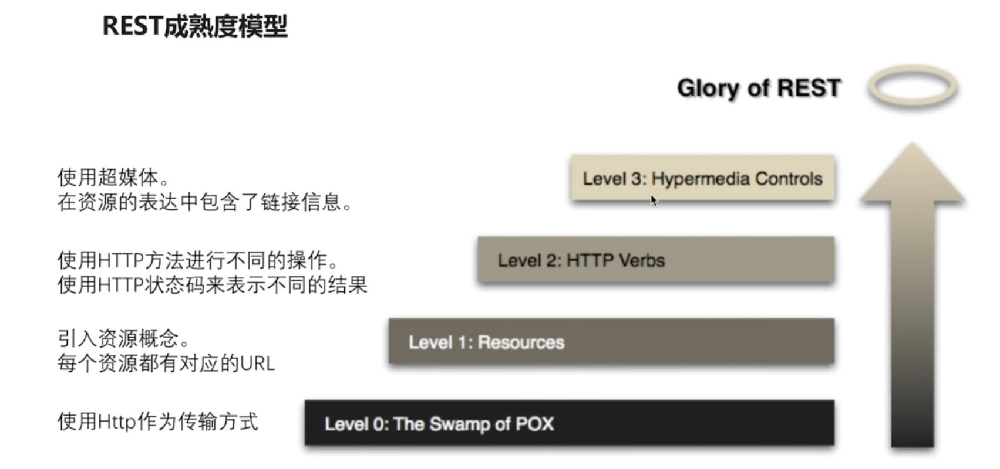
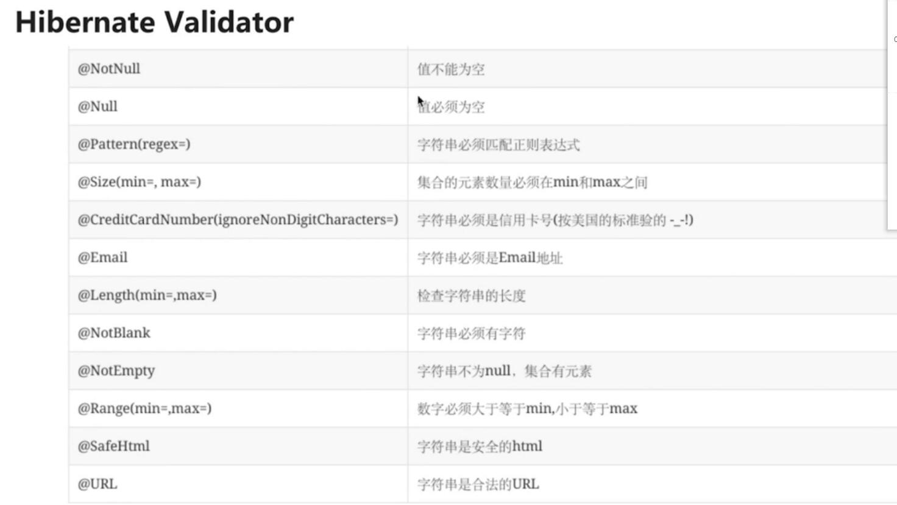
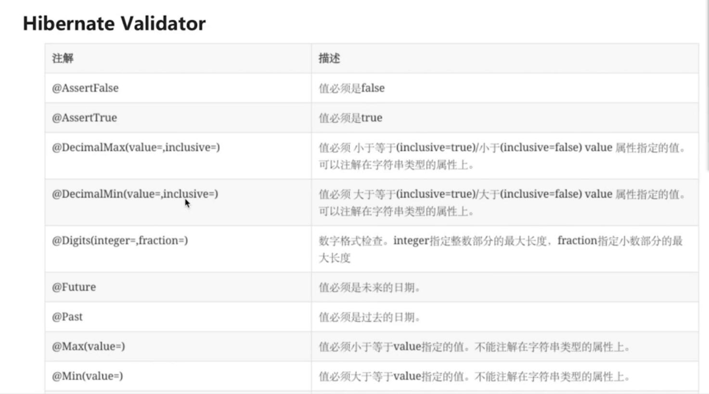
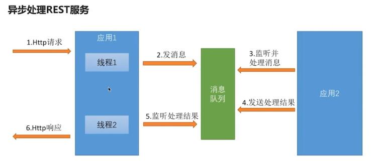
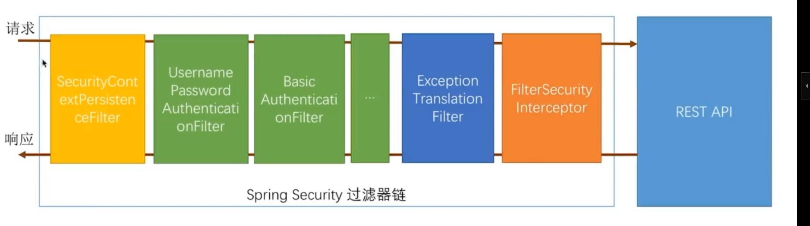
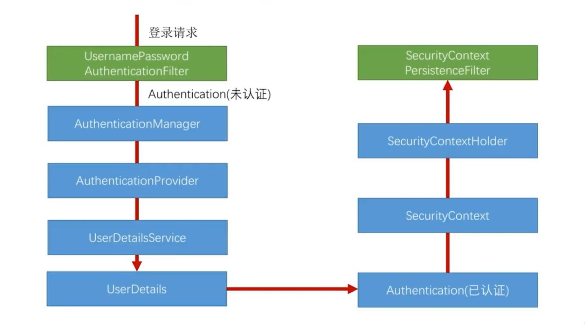

Java
PS:待开发中。。。。
作者网页：www.jcohy.com
我的学习笔记，记录学习过程中的笔记以及遇到的问题,以及我的一些经验总结。如果出现链接失效,或者想知道更多的内容等情况可以提交 Issues 提醒我修改相关内容。
- 项目搭建
- Restful简介
- SpringBoot Security基本原理
一种软件架构风格、设计风格，而不是标准，只是提供了一组设计原则和约束条件。它主要用于客户端和服务器交互类的软件。
  RESTful 架构详解
- 在url声明中使用正则表达式。
@PutMapping("/{id:\\d+}") public User update(@Valid @RequestBody User user, BindingResult errors) { System.out.println(user.getId()); System.out.println(user.getUsername()); System.out.println(user.getPassword()); System.out.println(user.getBirthday()); user.setId("1"); return user; }- JsonView控制json输出的内容。
1.在实体类中使用接口来声明多个视图，并在值的对象的get方法上指定视图
public class User { public interface UserSimpleView {}; public interface UserDetailView extends UserSimpleView {}; private String id; private String username; private String password; private Date birthday; @JsonView(UserSimpleView.class) public String getUsername() { return username; } public void setUsername(String username) { this.username = username; } @JsonView(UserDetailView.class) public String getPassword() { return password; } public void setPassword(String password) { this.password = password; } @JsonView(UserSimpleView.class) public String getId() { return id; } public void setId(String id) { this.id = id; } @JsonView(UserSimpleView.class) public Date getBirthday() { return birthday; } public void setBirthday(Date birthday) { this.birthday = birthday; } }2.在Controller方法上指定视图
@GetMapping @JsonView(User.UserSimpleView.class) @ApiOperation(value = "用户查询服务") public List<User> query(UserQueryCondition condition, @PageableDefault(page = 2, size = 17, sort = "username,asc") Pageable pageable) { System.out.println(ReflectionToStringBuilder.toString(condition, ToStringStyle.MULTI_LINE_STYLE)); System.out.println(pageable.getPageSize()); System.out.println(pageable.getPageNumber()); System.out.println(pageable.getSort()); List<User> users = new ArrayList<>(); users.add(new User()); users.add(new User()); users.add(new User()); return users; } @GetMapping("/{id:\\d+}") @JsonView(User.UserDetailView.class) public User getInfo(@ApiParam("用户id") @PathVariable String id) { // throw new RuntimeException("user not exist"); System.out.println("进入getInfo服务"); User user = new User(); user.setUsername("tom"); return user; }- @Valid和BindingResult验证请求的合法性并处理校验结果
使用hibernate.validator进行校验
@NotBlank(message = "密码不能为空") private String password; 当前台传入的参数不符合校验规则的时候，会直接报错，不会进入到方法体中，当我们希望可以进入到方法体中，可以使用
BindingResult对象@PutMapping("/{id:\\d+}") public User update(@Valid @RequestBody User user, BindingResult errors) { System.out.println(user.getId()); System.out.println(user.getUsername()); System.out.println(user.getPassword()); System.out.println(user.getBirthday()); user.setId("1"); return user; }- 自定义校验
声明自定义校验接口
@Target({ElementType.METHOD, ElementType.FIELD}) @Retention(RetentionPolicy.RUNTIME) @Constraint(validatedBy = MyConstraintValidator.class) public @interface MyConstraint { //下面三个属性必写 String message(); Class[] groups() default { }; Class[] payload() default { }; }真正的校验逻辑在
MyConstraintValidator类中public class MyConstraintValidator implements ConstraintValidator<MyConstraint, Object> { //可以注入Spring容器中任何东西来执行校验逻辑 @Autowired private HelloService helloService; @Override public void initialize(MyConstraint constraintAnnotation) { System.out.println("my validator init"); } @Override public boolean isValid(Object value, ConstraintValidatorContext context) { helloService.greeting("tom"); System.out.println(value); return true; } }然后就可以使用注解来进行校验了
- 异步处理Rest服务
- 使用runnable异步处理Rest服务
@RequestMapping("/order") public Callable<String> order(){ Callable<String> result = new Callable<String>() { @Override public String call() throws Exception { logger.info("副线程开始"); Thread.sleep(1000); logger.info("副线程返回"); return "success"; } }; logger.info("主线程返回"); return result; }使用DeferredResult异步处理Rest服务 模拟一个订单请求，当placeOrder有值时，接到下单请求 completeOrder有值时，下单请求完成。
@Component public class MockQueue { private String placeOrder; private String completeOrder; private Logger logger = LoggerFactory.getLogger(getClass()); public String getPlaceOrder() { return placeOrder; } public void setPlaceOrder(String placeOrder) throws Exception { new Thread(() -> { logger.info("接到下单请求, " + placeOrder); try { Thread.sleep(1000); } catch (Exception e) { e.printStackTrace(); } this.completeOrder = placeOrder; logger.info("下单请求处理完毕," + placeOrder); }).start(); } public String getCompleteOrder() { return completeOrder; } public void setCompleteOrder(String completeOrder) { this.completeOrder = completeOrder; } }@Component public class DeferredResultHolder { private Map<String, DeferredResult<String>> map = new HashMap<String, DeferredResult<String>>(); public Map<String, DeferredResult<String>> getMap() { return map; } public void setMap(Map<String, DeferredResult<String>> map) { this.map = map; } }Controller
@RequestMapping("/order") public DeferredResult<String> order() throws Exception { logger.info("主线程开始"); String orderNumber = RandomStringUtils.randomNumeric(8); mockQueue.setPlaceOrder(orderNumber); DeferredResult<String> result = new DeferredResult<>(); deferredResultHolder.getMap().put(orderNumber, result); return result; }QueueListener:实现ApplicationListener<ContextRefreshedEvent>。当初始化完成后开始监听
@Component public class QueueListener implements ApplicationListener<ContextRefreshedEvent> { @Autowired private MockQueue mockQueue; @Autowired private DeferredResultHolder deferredResultHolder; private Logger logger = LoggerFactory.getLogger(getClass()); @Override public void onApplicationEvent(ContextRefreshedEvent event) { new Thread(() -> { while (true) { if (StringUtils.isNotBlank(mockQueue.getCompleteOrder())) { String orderNumber = mockQueue.getCompleteOrder(); logger.info("返回订单处理结果:"+orderNumber); deferredResultHolder.getMap().get(orderNumber).setResult("place order success"); mockQueue.setCompleteOrder(null); }else{ try { Thread.sleep(100); } catch (InterruptedException e) { e.printStackTrace(); } } } }).start(); } }- 异步处理配置
重写
WebMvcConfigAdapter中的ConfigureAsyncSupport方法
SpringBoot Security基本原理
当引入spring secrity时，默认开启安全验证。想要关闭可以在配置文件中书写：
security.basic.enabled = false@Configuration public class BrowserSecurityConfig extends WebSecurityConfigurerAdapter { @Override protected void configure(HttpSecurity http) throws Exception { // 表单登录配置项 // http.formLogin() //默认弹出框验证 http.httpBasic() .and() .authorizeRequests() .anyRequest() .authenticated(); } }
- 自定义用户认证逻辑
- 处理用户信息获取逻辑
UserDetailsService@Component public class MyUserDetailsService implements UserDetailsService, SocialUserDetailsService { private Logger logger = LoggerFactory.getLogger(getClass()); @Autowired private PasswordEncoder passwordEncoder; /* * (non-Javadoc) * * @see org.springframework.security.core.userdetails.UserDetailsService# * loadUserByUsername(java.lang.String) */ @Override public UserDetails loadUserByUsername(String username) throws UsernameNotFoundException { logger.info("表单登录用户名:" + username); return buildUser(username); } @Override public SocialUserDetails loadUserByUserId(String userId) throws UsernameNotFoundException { logger.info("设计登录用户Id:" + userId); return buildUser(userId); } private SocialUserDetails buildUser(String userId) { // 根据用户名查找用户信息 //根据查找到的用户信息判断用户是否被冻结 String password = passwordEncoder.encode("123456"); logger.info("数据库密码是:"+password); return new SocialUser(userId, password, true, true, true, true, AuthorityUtils.commaSeparatedStringToAuthorityList("admin")); } }- 处理用户校验逻辑
UserDetails- 处理密码加密解密
PasswordEncoder@Bean public PasswordEncoder passwordEncoder() { return new BCryptPasswordEncoder(); }- 个性化用户认证流程
- 自定义登录页面
http.formLogin().loginPage("/singIn.html")- 自定义登录成功处理
AuthenticationSuccessHandler- 自定义登录失败处理
AuthenticationFailureHandler- 认证流程源码分析
- 认证处理流程说明
SpringBoot的过滤器链
首先进入
UserNamePasswordAuthenticationFilter过滤器来处理表单登录请求。public Authentication attemptAuthentication(HttpServletRequest request, HttpServletResponse response) throws AuthenticationException { if (postOnly && !request.getMethod().equals("POST")) { throw new AuthenticationServiceException( "Authentication method not supported: " + request.getMethod()); } String username = obtainUsername(request); String password = obtainPassword(request); if (username == null) { username = ""; } if (password == null) { password = ""; } username = username.trim(); //构建UsernamePasswordAuthenticationToken，继承AbstractAuthenticationToken，而AbstractAuthenticationToken实现了Authentication //Authentication接口封装了用户认证信息 UsernamePasswordAuthenticationToken authRequest = new UsernamePasswordAuthenticationToken( username, password); // Allow subclasses to set the "details" property //把请求的一些信息设置到UsernamePasswordAuthenticationToken setDetails(request, authRequest); //调用getAuthenticationManager，本身并不进行认证，用来管理AuthenticationProvider, return this.getAuthenticationManager().authenticate(authRequest); }
UsernamePasswordAuthenticationTokenpublic UsernamePasswordAuthenticationToken(Object principal, Object credentials) { //调用父类AbstractAuthenticationToken的构造方法，需要传入一组权限，由于还没进行用户认证，不知道权限是什么。所以传false、 super(null); this.principal = principal; this.credentials = credentials; //代表我传进去的身份信息是否经过验证。 setAuthenticated(false); }
AbstractAuthenticationTokenpublic AbstractAuthenticationToken(Collection<? extends GrantedAuthority> authorities) { if (authorities == null) { this.authorities = AuthorityUtils.NO_AUTHORITIES; return; } for (GrantedAuthority a : authorities) { if (a == null) { throw new IllegalArgumentException( "Authorities collection cannot contain any null elements"); } } ArrayList<GrantedAuthority>temp = new ArrayList<GrantedAuthority>( authorities.size()); temp.addAll(authorities); this.authorities = Collections.unmodifiableList(temp); }
ProviderManager：实现了AuthenticationManager。程序会进入authenticate()方法中，获取AuthenticationProvider：真正的校验逻辑处理public Authentication authenticate(Authentication authentication) throws AuthenticationException { //以表单登录为例：此处的toTest应为UsernamePasswordAuthenticationToken //此外，第三方登录SocialAuthenticationToken Class toTest = authentication.getClass(); AuthenticationException lastException = null; Authentication result = null; boolean debug = logger.isDebugEnabled(); //拿到所有的AuthenticationProvider接口。真正的校验逻辑是写在AuthenticationProvider里的。不同的登录方式对应的校验逻辑不一样 for (AuthenticationProvider provider : getProviders()) { //判断当前的provider是否支持当前Authentication的类型 if (!provider.supports(toTest)) { continue; } if (debug) { logger.debug("Authentication attempt using " + provider.getClass().getName()); } try { //真正的认证处理。调用DaoAuthenticationProvider.authenticate(authentication) result = provider.authenticate(authentication); if (result != null) { copyDetails(authentication, result); break; } } catch (AccountStatusException e) { prepareException(e, authentication); // SEC-546: Avoid polling additional providers if auth failure is due to // invalid account status throw e; } catch (InternalAuthenticationServiceException e) { prepareException(e, authentication); throw e; } catch (AuthenticationException e) { lastException = e; } } if (result == null && parent != null) { // Allow the parent to try. try { result = parent.authenticate(authentication); } catch (ProviderNotFoundException e) { // ignore as we will throw below if no other exception occurred prior to // calling parent and the parent // may throw ProviderNotFound even though a provider in the child already // handled the request } catch (AuthenticationException e) { lastException = e; } } if (result != null) { if (eraseCredentialsAfterAuthentication && (result instanceof CredentialsContainer)) { // Authentication is complete. Remove credentials and other secret data // from authentication ((CredentialsContainer) result).eraseCredentials(); } eventPublisher.publishAuthenticationSuccess(result); return result; } // Parent was null, or didn't authenticate (or throw an exception). if (lastException == null) { lastException = new ProviderNotFoundException(messages.getMessage( "ProviderManager.providerNotFound", new Object[] { toTest.getName() }, "No AuthenticationProvider found for {0}")); } prepareException(lastException, authentication); throw lastException; }
DaoAuthenticationProvider:继承自AbstractUserDetailsAuthenticationProvider校验逻辑主要写在抽象类中的authenticate(authentication)public Authentication authenticate(Authentication authentication) throws AuthenticationException { Assert.isInstanceOf(UsernamePasswordAuthenticationToken.class, authentication, messages.getMessage( "AbstractUserDetailsAuthenticationProvider.onlySupports", "Only UsernamePasswordAuthenticationToken is supported")); // Determine username 获取用户对象 String username = (authentication.getPrincipal() == null) ? "NONE_PROVIDED" : authentication.getName(); boolean cacheWasUsed = true; // 获取用户对象 UserDetails user = this.userCache.getUserFromCache(username); if (user == null) { cacheWasUsed = false; try { //调用我们提供的UserDetailService的实现的loadUserByUsername获取User user = retrieveUser(username, (UsernamePasswordAuthenticationToken) authentication); } catch (UsernameNotFoundException notFound) { logger.debug("User '" + username + "' not found"); if (hideUserNotFoundExceptions) { throw new BadCredentialsException(messages.getMessage( "AbstractUserDetailsAuthenticationProvider.badCredentials", "Bad credentials")); } else { throw notFound; } } Assert.notNull(user, "retrieveUser returned null - a violation of the interface contract"); } try { //预检查，主要检查用户，也就是UserDetail中的四个boolean值的三个是否锁定，过期，可用 preAuthenticationChecks.check(user); //附加检查，主要对密码进行检查 additionalAuthenticationChecks(user, (UsernamePasswordAuthenticationToken) authentication); } catch (AuthenticationException exception) { if (cacheWasUsed) { // There was a problem, so try again after checking // we're using latest data (i.e. not from the cache) cacheWasUsed = false; user = retrieveUser(username, (UsernamePasswordAuthenticationToken) authentication); preAuthenticationChecks.check(user); additionalAuthenticationChecks(user, (UsernamePasswordAuthenticationToken) authentication); } else { throw exception; } } //后检查，检查四个boolean中最后一个。 postAuthenticationChecks.check(user); if (!cacheWasUsed) { this.userCache.putUserInCache(user); } Object principalToReturn = user; if (forcePrincipalAsString) { principalToReturn = user.getUsername(); } //如果认证成功。就创建authentication return createSuccessAuthentication(principalToReturn, authentication, user); }
additionalAuthenticationChecks:附加检查protected void additionalAuthenticationChecks(UserDetails userDetails, UsernamePasswordAuthenticationToken authentication) throws AuthenticationException { Object salt = null; if (this.saltSource != null) { salt = this.saltSource.getSalt(userDetails); } if (authentication.getCredentials() == null) { logger.debug("Authentication failed: no credentials provided"); throw new BadCredentialsException(messages.getMessage( "AbstractUserDetailsAuthenticationProvider.badCredentials", "Bad credentials")); } String presentedPassword = authentication.getCredentials().toString(); //密码加解密器，是否匹配 if (!passwordEncoder.isPasswordValid(userDetails.getPassword(), presentedPassword, salt)) { logger.debug("Authentication failed: password does not match stored value"); throw new BadCredentialsException(messages.getMessage( "AbstractUserDetailsAuthenticationProvider.badCredentials", "Bad credentials")); } }
createSuccessAuthenticationprotected Authentication createSuccessAuthentication(Object principal, Authentication authentication, UserDetails user) { // Ensure we return the original credentials the user supplied, // so subsequent attempts are successful even with encoded passwords. // Also ensure we return the original getDetails(), so that future // authentication events after cache expiry contain the details //重新new了一次UsernamePasswordAuthenticationToken。调用的是有三个参数的构造函数，而不是之前的两个参数的构造函数 UsernamePasswordAuthenticationToken result = new UsernamePasswordAuthenticationToken( principal, authentication.getCredentials(), authoritiesMapper.mapAuthorities(user.getAuthorities())); result.setDetails(authentication.getDetails()); return result; }当用户校验通过后，会调用一个
successfulAuthentication(request,response,chain,authResult)方法，使用我们自定义的那个AuthenticationSuccessHandler成功的处理器来处理当用户校验过程中某一项不通过时，会调用一个
unsuccessfulAuthentication(request,response,failed)方法，使用我们自定义的那个AuthenticationFailedHandler失败的处理器来处理- 认证结果如何在多个请求之间共享
首先来看用户认证通过后会进入到
AbstractAuthenticationProcessingFilter的successfulAuthenticationprotected void successfulAuthentication(HttpServletRequest request, HttpServletResponse response, FilterChain chain, Authentication authResult) throws IOException, ServletException { if (logger.isDebugEnabled()) { logger.debug("Authentication success. Updating SecurityContextHolder to contain: " + authResult); } //SecurityContextHolder实际上是ThreadLocal的封装，把当前认证放到一个线程里去，以供后续的SecurityContextPersistenceFilter使用， //此过滤器链位于整个过滤器的最前面，请求进来检查Session中是否有SecurityContext，如果有，就把SecurityContext拿出来放到线程里。 返回时，检查线程，如果线程有SecurityContext，就放到session中去 SecurityContextHolder.getContext().setAuthentication(authResult); rememberMeServices.loginSuccess(request, response, authResult); // Fire event if (this.eventPublisher != null) { eventPublisher.publishEvent(new InteractiveAuthenticationSuccessEvent( authResult, this.getClass())); } //调用我们自己定义的成功处理器 successHandler.onAuthenticationSuccess(request, response, authResult); }- 获取认证用户信息
@GetMapping("/me") public Object getCurrentUser(Authentication authentication){ return authentication; } @GetMapping("/me") public Object getCurrentUser(@AuthenticationPrincipal authentication){ return authentication; }